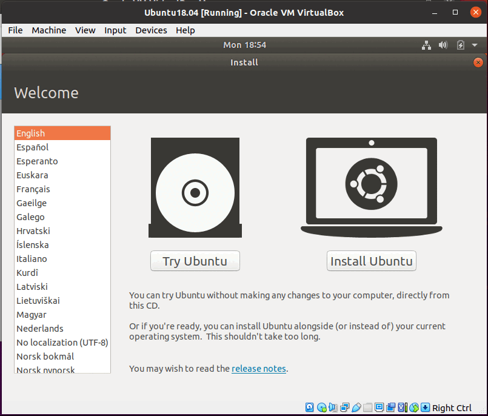

Ubuntu Installation
ROS Noetic requires an Ubuntu 20.04. An easy way to do this is to create a virtual machine. Download the Virtualbox app as well as the 20.04 ubuntu desktop.
Environment Downloads
Create Ubuntu Virtual Machine
In Virtual box, click the create new VM button, and make sure the bellow requirments are set before completing.
2GB-8GB of memory.
A new virtual hard disk
VDI
Dynamically allocated
25GB-50GB

Virtual Machine Settings
Navigate to settings/system/processor. Change the CPU amount from 1 CPU to 2-4

Navigate to settings/Network and change from NAT to Bridgeed Adapter to set up internet

Navigate to settings/Storage and add in the virtual disk downloaded previously

Start Ubuntu VM
Start your VM by double clicking on navigation bar, or by pressing start button. When prompted, proceed to “Install Ubuntu” option and complete configuration.
{kind=link}
VM Modifications
To include Copy and Paste options from your machine to the VM, select ‘Bidirectional’ option from Devices -> Shared Clipboard
To change size of VM window frame select ‘Insert Guest Additions CD image…’ from Devices